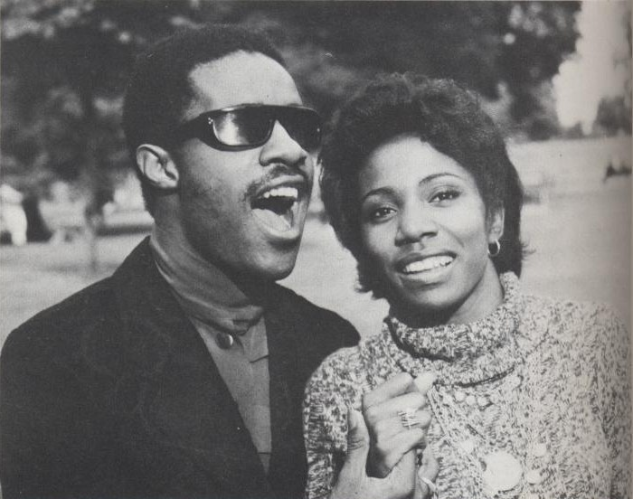
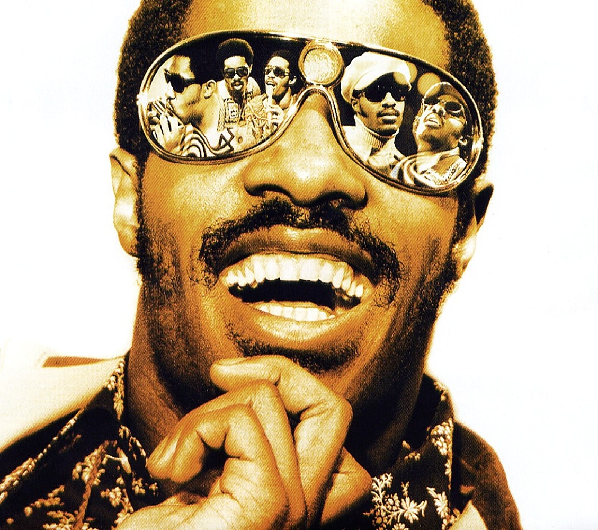

Motown Years
Continued Success...

Whilst only mildly successful as a child star, Stevie's work in the mid-to-late 1960s became very popular. During this time he dropped the "Little" from "Stevie Wonder" and enjoyed experimenting in the studio and on tour. His performances would often include Wonder playing several instruments, including piano / synthesizer, drums, bass and his distinctive chromatic harmonica.
Wonder benefitted from mixing and performing with a range of older, successful musicians at Motown, including Martha and the Vandellas, Marvin Gaye and Tammi Terrell and Smokey Robinson and the Miracles, to name but a few. He even wrote the hit song "Tears of a Clown" for Smokey Robinson and the Miracles.

In the late 1960s, Stevie met a secretary at Motown named Syreeta Wright, who turned out to be a talented singer and songwriter. Wright collaborated on several songwriting efforts with Wonder during this time, and Wonder helped Wright produce solo albums, including Stevie Wonder presents Syreeta. The two married in 1970, whilst Wonder was only 20 years old and engrossed in his career.
Perhaps due to these pressures, the marriage only lasted two years, but the two remained close friends until Wright's death in 2004. It has been suggested that Wonder's 1972 album Talking Book tells the story of this marriage, from the idyllic love described in "You Are The Sunshine of My Life" to the sad acceptance of its ending in "Blame it On The Sun" and "Looking for Another Pure Love"

Like Marvin Gaye and other visionary artists, in the early 1970s Stevie Wonder became frustrated by the excessive control Motown executives had over his musical releases. Gaye, Wonder and others wanted the freedom to release original, thought-provoking, risk-taking material with experimental instrument combinations and topical, socially conscious themes.
Wonder allowed his Motown contract to expire and released two albums independently, increasing his bargaining position with Motown considerably, and Wonder triumphed, returning with strong creative control. Many feel that Wonder released his best work during this "classic period" in the 1970s, including the concept albums Music of My Mind, Innervisions and Talking Book.
"Uptight" music video (1965)
"If You Really Love Me" (1971)
co-written by Stevie Wonder and Syreeta Wright